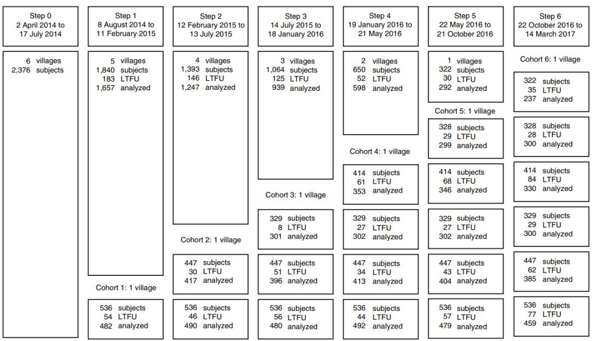
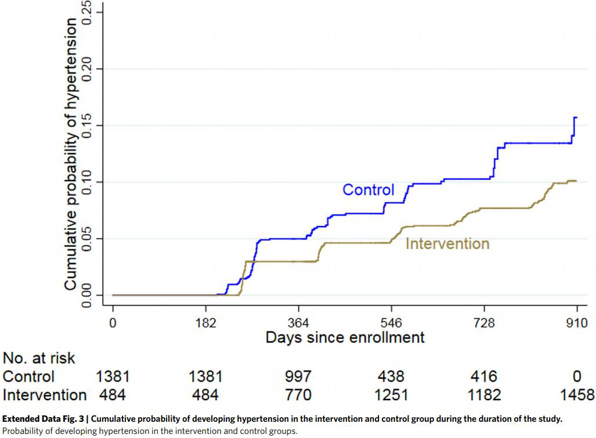

作者：谭硕
这段时间宅在家里，为抗击疫情做贡献的奇点糕常常感慨，现在科技是真的发达了，足不出户就能被几千公里之外的破事，气得脑仁疼睡不着觉血压升高…… 说归说啊，真要气到血压升高可不好。奇点糕们可一再强调，高血压是心血管疾病最大的危险因素，而且中国人因为吃的盐太多，本来高血压的发病率就不低啦。
从限盐入手预防高血压，也是世卫组织早就给中国推荐的方案。不过最近，《自然·医学》上刊登的一项最新试验结果，给出了全新的思路：把食用盐换一换，改吃含有 25% 氯化钾的代用盐，就与高血压发病风险降低 51% 有关！
都说上医治未病，这 51% 的风险降低，预防效果真是杠杠的。估计很多读者已经压不住好奇心了，氯化钠换氯化钾这一招如此有效，到底是为什么呢？
吃盐要少这回事，不光奇点糕经常念叨，各种健康宣传和科普教育也没少提。但中国人均的食盐摄入量，仍然是世卫组织推荐的一倍以上，很多人就是爱吃咸这一口，怎么都改不过来。
所以早在 90 年代末，就有外国科学家提出，使用降低氯化钠含量，提高氯化钾含量的代用盐（Salt Substitute），以降低高血压风险，除了降低氯化钠含量，补钾也对降血压有一定的作用。
而且这一招，理论上在发展中国家最好使。发达国家的食盐摄入，主要来自加工食品，个人不容易说减就减，但发展中国家的食盐摄入，很大一部分来自在家烹饪放的盐，这就是代用盐的机会。
近些年来，国内也有一些临床试验探索了代用盐在降血压方面的效果，但结论却存在差异，多的能让收缩压降低 5mmHg，少的也就是 1mmHg，看起来似乎效果有限。
但 Meta 分析却显示，健康人的收缩压低于 115mmHg 时，每降低 2mmHg 的收缩压，就与中风死亡率下降 10%，心血管疾病死亡率下降7% 有关，降压不多，获益可一点不少。
比起吃药防病，换盐至少没有那么大的心理负担吧？不过之前的试验随访期普遍偏短，而高血压是一种慢性病，只看降血压的幅度去判断获益，其实也不太可靠。
于是就有了本次由秘鲁卡耶塔诺-埃雷迪亚大学研究团队主持的试验，不过在这项试验里，高血压发病风险（试验采用 140/90mmHg 的旧标准）其实仍然是次要终点，主要终点还是降血压，并且相关结果已经发表了论文。
本次试验在秘鲁的 6 个村庄以阶梯设计、群组试验（stepped-wedge cluster trial）的形式开展，总共有 2400 多名村民参加。和中国一样，秘鲁也是高血压和心血管疾病的高发国家。
试验中的阶梯设计，是指在第一个村庄的试验证实换盐的初步好处后，研究团队会逐步把换盐的做法在 6 个村庄全面铺开，让更多的参与者获益，这和一般的随机对照试验很不一样。

由于含 25% 氯化钾的代用盐价格比当地的常规加碘盐更高，试验采取了给村庄免费换盐的做法，每个村庄用五个月的时间，让小商小贩、餐馆店铺和家庭主妇都能接受代用盐，一段时间后再来测村民们的血压，评价代用盐的效果。
在降血压这个主要终点上，本次试验的效果与 2017 年中国开展的一项试验接近，村民的收缩压和舒张压，平均下降了 1.23 和 0.72mmHg。试验开始时就有高血压的村民，以及 60 岁以上的村民，换盐降压的效果最明显。
排除掉 400 多名试验开始时就有高血压的村民后，研究团队分析了剩余村民在试验期内的高血压发病情况，从结果来看，换盐与村民高血压发病的风险下降 51% 有关（HR 0.49），调整体重、性别等因素后，这个数字更是增到了 55%！

除了这两个指标，研究团队还分析了受试者在试验前后的 24 小时尿钠、尿钾检测结果，尿钠结果相对稳定，而尿钾显著升高（0.63 克），说明这种代用盐的策略，受到了试验群体的普遍接纳。
研究团队认为，这种在真实世界中开展的群组试验，能充分反映代用盐策略的可行性和效果，相当适合发展中国家，只是一些数据还有待更长时间的随访观察，而且试验没有对代用盐使用前后的食盐摄入量直接作对比，算是个小小的遗憾。
不过在奇点糕看来，制约换盐推广的主要因素可能会是钱，因为研究团队使用的代用盐，价格高达 2 美元一斤……虽然这么吃，应该还是比吃药便宜吧？只要大家善待卖盐的人
对了提醒一下啊，这项试验排除了患有肾脏疾病和需要服用地高辛的人群，所以代用盐也不是人人皆宜，老话说得好，遵医嘱行事。
来自: 中国科学报